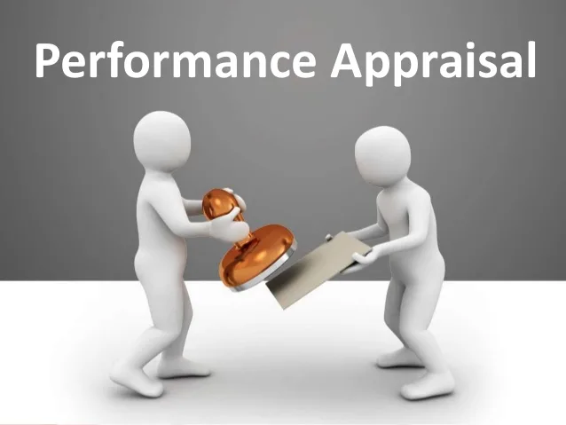
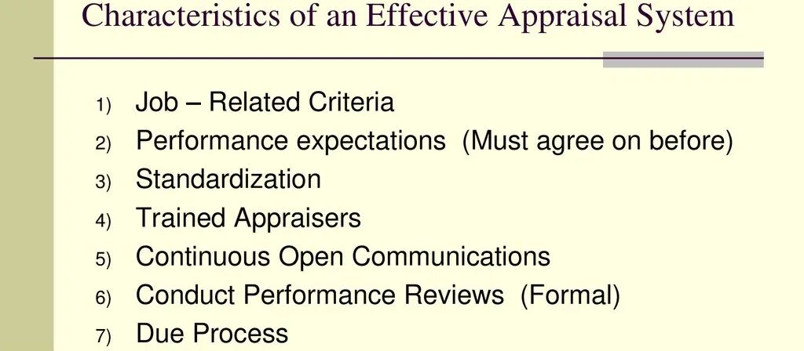
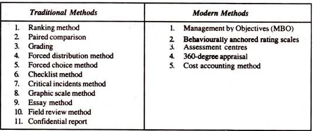
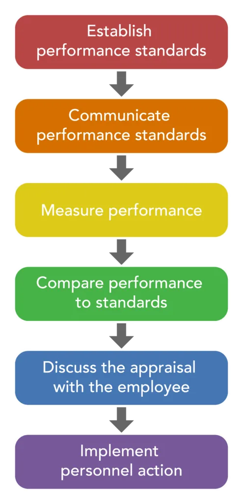
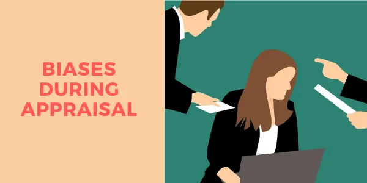

Expanded Nursing Uganda Explanation
Performance Appraisal should be understood beyond a short definition. Link the concept to patient history, focused assessment, common risks, nursing priorities, documentation and evaluation of outcomes.
01 PERFORMANCE APPRAISAL
Performance appraisal is a process by which an employee’s contribution to the organization during a specified period of time is assessed.
02 Characteristics of an Effective Appraisal System
- Reliability and Validity: The appraisal system should provide consistent and accurate information that can be defended in legal challenges. Appraisals should satisfy the conditions of reliability and validity i.e measuring what they are supposed to measure.
- Job Relatedness: The appraisal technique should measure performance and provide information on job-related activities/areas.
- Standardization : Appraisal forms, procedures, administration of techniques, ratings, etc., should be standardized to ensure fair and consistent evaluations.
- Practical Viability : The appraisal techniques should be feasible to administer, implement, and undertake continuously without excessive costs.
- Legal Sanction : Appraisals must comply with labor laws and regulations.
- Training to Appraisers : Appraisers should receive training on rating, documenting appraisals, conducting appraisal interviews, and avoiding rating errors.
- Open Communication : Employees should receive regular feedback on their performance and have the opportunity to discuss their appraisals with their managers.
- Employee Access to Results : Employees should have access to their appraisal results to understand their strengths and weaknesses and identify areas for improvement.
- Due Process : Formal procedures should be in place for employees to challenge inaccurate or unfair appraisal results and have their grievances addressed objectively.
- Focus on Employee Development : Performance appraisals should primarily aim to develop employees as valuable resources rather than being used as a punitive measure.
03 Objectives of Performance Appraisal
- Compensation and Rewards : To determine fair compensation packages, wage structures, salary raises, and other rewards based on employee performance.
- Talent Placement : To identify the strengths and weaknesses of employees and place them in roles that best match their capabilities and contribute to the organization’s success.
- Employee Development : To assess an employee’s potential for growth and development, and to create opportunities for training and advancement.
- Feedback and Communication: To provide employees with constructive feedback on their performance, helping them understand their strengths and areas for improvement.
- Performance Improvement : To influence and improve employee work habits and behaviors, promoting a culture of continuous improvement.
- Training and Development Programs: To evaluate the effectiveness of training and development programs and make necessary adjustments to enhance employee performance.
- Promotion and Career Planning: To identify employees who are ready for promotion and to develop career paths that align with their goals and the organization’s needs.
04 Principles of Performance Appraisal.
- It must be based on objectives and behaviorally oriented performance standards for the position the person is holding.
- The objectives should be in behavioral terms.
- The criteria should be well defined and should be known to staff who will be appraised.
- The methods used for appraisal based on the objectives, standards and criteria framed for appraisal.
- It should be documented and discussed with the employee.
05 Methods/Techniques/Approaches/Tools of Performance Appraisal
Traditional Methods: Traditional Methods emphasize rating the individual’s personality traits, such as initiative, dependability, drive, creativity, integrity, intelligence, leadership potential, etc.
- Ranking Method : Employees are ranked against each other within a work group. Useful in small organizations.
- Paired Comparison Method: Each employee is compared with every other employee, one at a time, and a tick mark is given to the better employee.
- Forced Distribution Method : Raters are forced to distribute ratings of overall performance into predetermined categories, such as excellent, good, average, below average, and poor.
- Grading Method : Employees are assigned grades based on predefined categories of abilities or performance. Such grades are very good, good, average, poor and very poor. Here the individual traits and characteristics are identified.
- Checklist Method : Employees are evaluated based on answers to a series of questions related to their behavior and performance. Such as Does he respect the superiors? Yes/No.
- Forced Choice Method: Raters are presented with groups of positive and negative statements and forced to choose one statement from each group to describe the employee.
- Critical Incident Method : Performance is evaluated based on specific incidents or events that have occurred. Such as Refused to cooperate with other employees. Got angry over work or with subordinates. Suggested a procedure to improve the quality of goods.
- Graphic Rating Scale Method: It is also known as linear rating scale. In this method, the printed appraisal form is used to appraise each employee. The form lists traits (such as quality and reliability) and a range of job performance characteristics (from unsatisfactory to outstanding) for each trait.
- Field Review Method : Raters interview the employee’s superiors to collect information for the performance appraisal.
- Essay Evaluation: Nurse manager is required to describe the employee’s performance over the entire evaluation period by writing a narrative detailing the strength and weaknesses of the appraise.
- Peer Review : Which is also called Peer appraisal is a type of feedback where employees write a review of their fellow co-workers during performance evaluation
- Confidential Reports : Mostly used in government organizations. Old and traditional methods of evaluating employees. A confidential report is a descriptive report about the employee and generally prepared at the end of every year by the immediate superior.
Modern Methods: Modern Methods are more inclined towards job achievement and evaluation of work results.
- MBO : It means management by objectives and the performance is rated against the achievement of objectives stated by the management.
- Behaviorally Anchored Rating Scales (BARS): BARS are systematically developed checklists using critical incidents in combination with graphic rating scales.
- 360-Degree Feedback Appraisal : Also known as multi-rater feedback. The evaluation feedback is taken from superiors, subordinates, peer-groups or team members, clients and self appraisal.
- Cost Accounting Method: Here, performance is evaluated from the monetary returns yields to his or her organization. Cost to keep employees, and benefit the organization derives is ascertained. Hence it is more dependent upon cost and benefit analysis.
06 Process of Performance Appraisal
Step 1: Establish Performance Standards
- Performance standards are set to ensure that employees are working towards achieving departmental and organizational goals.
- Standards should be specific, measurable, achievable, relevant, and time-bound (SMART).
- Performance standards should include both observable behaviors and expected results.
Step 2: Communicate Performance Standards
- Performance standards must be clearly communicated to employees so that they understand what is expected of them.
- Communication should include information about any training or development opportunities that are available to help employees meet the standards.
Step 3: Measure Performance
- Performance can be measured through a variety of methods, including observation, oral reports, and written reports.
- It is important to focus on measuring what matters, rather than what is easy to measure.
Step 4: Compare Actual Performance to Performance Standards
- In this step, the employee’s actual performance is compared to the performance standards.
- Documentation should highlight specific actions and results.
Step 5: Discuss the Appraisal with the Employee
- The appraisal discussion should be a two-way conversation, with the manager providing feedback and the employee having the opportunity to respond.
- It is important to focus on the employee’s strengths and weaknesses, and to develop a plan for improvement.
Step 6: Implement Personnel Action
- The final step in the appraisal process is to implement any necessary personnel actions, such as rewards or corrective action.
- Corrective action should be taken in a timely manner, and should be designed to help the employee improve their performance.
07 Principal Obstacles to Effective Performance Appraisal
1. Lack of support from top management : The hospital’s senior leadership does not prioritize performance appraisal and does not provide adequate resources or training to managers to conduct effective appraisals.
2 . Resistance on the part of evaluators : Time, paperwork, and observation: Performance appraisal requires a significant investment of time and effort from supervisors, who may have other pressing responsibilities.
3. Playing god : Supervisors may be uncomfortable with the responsibility of evaluating and judging the performance of their subordinates.
4. Lack of understanding : Supervisors may not fully understand the purpose and procedures of performance appraisal, which can lead to confusion and resistance.
5. Lack of skills : Supervisors may lack the necessary skills and training to conduct effective performance appraisals.
6. Performance appraisal not perceived as being productive: The hospital’s performance appraisal process is seen as a bureaucratic exercise that does not lead to meaningful improvements in employee performance or patient care.
7. Evaluation biases and rating errors : Supervisors may be biased in their evaluations of employees, leading to inaccurate and unfair ratings. This can be due to factors such as personal relationships, favoritism, or stereotypes.
8. Lack of clear, objective standards of performance : The hospital’s performance appraisal system lacks clear and objective standards for evaluating employee performance, which can lead to inconsistent and subjective ratings.
9. Failure to communicate purposes and results of performance appraisal to employees: The hospital does not effectively communicate the purposes and results of performance appraisals to employees, which can lead to confusion and resentment.
7. Lack of a suitable appraisal tool : The hospital’s performance appraisal tool is not well-designed or appropriate for evaluating the specific roles and responsibilities of hospital employees.
8. Failure to police the appraisal procedure effectively: The hospital does not have a system in place to monitor and ensure that performance appraisals are conducted fairly and consistently.
08 Biases during Appraisals.
1. First Impression (primacy effect) : A manager forms a positive impression of an employee based on their strong performance in a recent project, and this biases their overall evaluation of the employee’s performance, even if their performance in other areas is not as strong.
2. Halo Effect: A manager rates an employee highly in all areas of performance because they have a positive impression of the employee’s personality or appearance.
3. Horn Effect: A manager rates an employee poorly in all areas of performance because they have a negative impression of the employee’s personality or appearance.
4. Excessive Stiffness or Lenience : A manager rates all employees very strictly because they believe that high standards are important, even if this means that some employees are unfairly penalized.
5. Central Tendency : A manager rates all employees as average performers because they are uncomfortable with giving high or low ratings.
6. Personal Biases : A manager rates an employee poorly because they dislike the employee’s personal style or beliefs.
7. Spillover Effect : A manager rates an employee highly based on their strong performance in the past, even though their performance in the current appraisal period has been weaker.
8. Recency Effect: A manager rates an employee poorly based on their recent performance, even though their performance over the entire appraisal period has been strong.
To avoid biases during appraisals, managers should:
- Be aware of their own biases and take steps to minimize their impact on their evaluations.
- Use objective performance standards to evaluate employees.
- Consider all of an employee’s performance, not just their most recent or most visible work.
- Get input from multiple sources, such as peers, subordinates, and customers, to get a more complete picture of an employee’s performance.
- Provide employees with feedback on their performance regularly, so that they can address any areas that need improvement.
09 Nursing Uganda Clinical Lens
Use Performance Appraisal as a practical nursing topic, not only a memorized definition. Translate theory into safe decisions, accountability, communication and service improvement.
- What to understand first: define performance appraisal, identify the normal or expected pattern, then explain what changes when the patient is unwell.
- Why it matters in care: the nurse must recognize risk early, explain findings clearly, document accurately and know when to escalate.
- How to revise it: connect each point to assessment, nursing diagnosis or care problem, intervention, rationale and evaluation.
10 Assessment Guide
- The problem, stakeholders, available resources, policy requirements and ethical issues.
- Risks to patients, staff, confidentiality, quality, costs and continuity.
- Documentation, reporting lines, supervision and evaluation measures.
11 Nursing Priorities, Rationales and Outcomes
- Use evidence, policy and professional standards to guide action.
- Communicate clearly, document decisions and protect confidentiality.
- Evaluate whether the action improves safety, learning or service delivery.
The rationale for these priorities is patient safety: nursing actions should prevent deterioration, reduce discomfort, support recovery and create clear evidence for the next caregiver.
- Expected outcome: The plan is documented, realistic, ethical and improves patient care or learning outcomes.
12 Patient Teaching and Revision Check
- Explain performance appraisal in simple language the patient or caregiver can repeat back.
- Teach warning signs, medicine or follow-up instructions, hygiene or lifestyle points where relevant.
- For exams, prepare a short answer using: definition, causes or risk factors, signs, assessment, management, complications and prevention.
- For ward practice, document baseline findings, actions taken, patient response and the plan for review.
Illustrations and Diagrams (7)







Related Video Lectures
Watch nursing lecture videos on YouTube for this topic. Opens in a new tab.
Watch on YouTubeExternal link: YouTube may use its own cookies and terms. Nursing Uganda is not affiliated with YouTube.